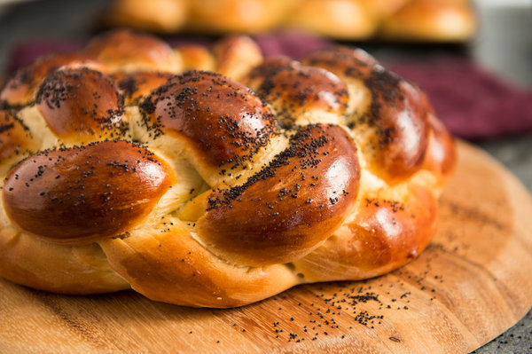

Challah

Description
The word challah originally meant only the small portion of dough that was put in the oven when baking bread as a reminder of the destruction of the Temple in Jerusalem. It has evolved into the twisted, sweet, almost brioche-like bread that was brought to America by immigrants from Central and Eastern Europe. Although straight loaves of braided challah are eaten throughout the year, round challahs, often studded with raisins, are served for Rosh Hashana, and also for Yom Kippur and Sukkot, the holidays celebrating the New Year and the fall harvest. Throughout the years, I have picked up tips from challah bakers throughout this country and in Europe and Israel. For example: Several risings make a better loaf, and if you want an especially brioche-like texture, let the dough rise slowly in the refrigerator for one of the three risings. The secret to a glossy loaf is to brush with an egg wash twice, once just after braiding and then again just before baking.
Ingredients
- 1½ packages active dry yeast (about 3½ teaspoons)
- 1 tablespoon plus ½ cup sugar
- ½ cup vegetable oil, more for greasing bowl
- 5 large eggs
- 1 tablespoon salt
- 8 to 8½ cups all-purpose flour
- Poppy or sesame seeds to sprinkling
Steps
- In a large bowl, dissolve yeast and 1 tablespoon sugar in 1¾ cups lukewarm water.
- Whisk oil into yeast, then beat in 4 eggs, one at a time, with remaining sugar and salt. Gradually add flour. When dough holds together, it is ready for kneading. (You can also use a mixer with a dough hook for both mixing and kneading.)
- Turn dough onto a floured surface and knead until smooth. Clean out bowl and grease it, then return dough to bowl. Cover with plastic wrap, and let rise in a warm place for 1 hour, until almost doubled in size. Dough may also rise in an oven that has been warmed to 150 degrees then turned off. Punch down dough, cover and let rise again in a warm place for another half-hour.
- To make a 6-braid challah, either straight or circular, take half the dough and form it into 6 balls. With your hands, roll each ball into a strand about 12 inches long and 1 1/2 inches wide. Place the 6 in a row, parallel to one another. Pinch the tops of the strands together. Move the outside right strand over 2 strands. Then take the second strand from the left and move it to the far right. Take the outside left strand and move it over 2. Move second strand from the right over to the far left. Start over with the outside right strand. Continue this until all strands are braided. For a straight loaf, tuck ends underneath. For a circular loaf, twist into a circle, pinching ends together. Make a second loaf the same way. Place braided loaves on a greased cookie sheet with at least 2 inches in between.
- Beat remaining egg and brush it on loaves. Either freeze breads or let rise another hour.
- If baking immediately, preheat oven to 375 degrees and brush loaves again. If freezing, remove from freezer 5 hours before baking. Then dip your index finger in the egg wash, then into poppy or sesame seeds and then onto a mound of bread. Continue until bread is decorated with seeds.
- Bake in middle of oven for 35 to 40 minutes, or until golden. Cool loaves on a rack.
Refrences
Image, description, ingredients, and steps all from:
Nathan, Joan. n.d. My Favorite Challah. NYT Cooking. https://cooking.nytimes.com/recipes/7199-my-favorite-challah